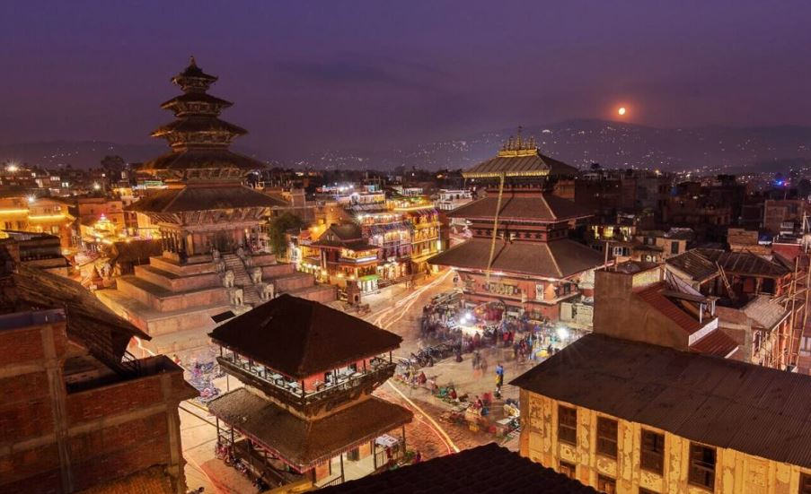
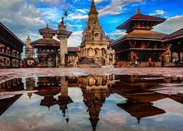
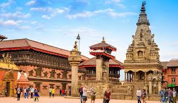
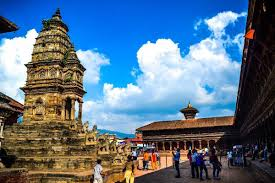
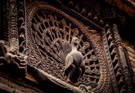

HISTORICAL
PEACEFUL E-Library for the
NEPAL Nepali Students
E-LIBRARY
HISTORICAL
PEACEFUL
E-Library for the
NEPAL Nepali Students
E-LIBRARY
⚲
Home
Historical Thinking
Browse History
About

 Bhaktapur Durbar Square, a famous UNESCO World Heritage Site since 1979, is another lovely milestone of Kathmandu Valley. Among the three urban communities of Kathmandu Valley, Bhaktapur is the smallest one. The city is famous for preserving and showcasing the traditional Newari life. The city has a mixed population of Hindu and Buddhist practitioners. Pottery Square, Dattatreya Square, Taumadhi Square, and Bhaktapur Durbar Square, which unfurls medieval Bhaktapur's rich culture and history, are must-visit sites. Highlights of Bhaktapur Durbar Square Temples and palaces built in the pagoda and shikhara styles of architecture Opportunity to participate in traditional pottery making at the Pottery Square Artistic wood carvings, stone sculptures, and metalwork Visit the Palace of 55 Windows, which used to be a royal residence Visit the Nyatapola Temple, once the tallest building in Kathmandu Valley
Bhaktapur Durbar Square Specility



